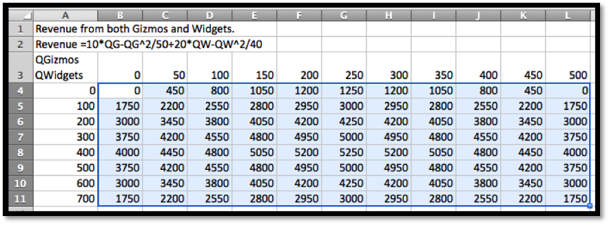

Section6.1Evaluating and Graphing Functions of Several Variables¶ permalink
When we were evaluating functions of a single variable we had to replace the variable with a cell reference. We do the same for functions of several variables. We simply have to use several cell references.
Example6.1.1Bank balances
Find the amount of money I will have in the bank in 10 years if I deposit $1000 and the bank pays 5% interest, compounded quarterly. Set the problem up in Excel so that I can use the worksheet for similar problems with different numbers.
Solution: We use the formula for future value of a single deposit.
Rather than typing the numbers into the formula, we place them in separate cells, so we can easily change the values for any of the 4 variables.
At the end of 10 years, we have $1,643.62 in the bank. By simply changing values in the worksheet, I find that compounding the interest annually reduces the final amount on 10 years to $1.628.89, while compounding weekly increases the final amount to $1,648.33.
In this example we have as many as four variables. We could vary: the initial deposit, the rate, the number of periods per year and the interest rate.
In previous chapters we have a variable (say q) and the function (such as profit) that depends on \(q\). Such a function might be written as something like \(profit(q)= -3 q^2+500q-1000\).
If we simplify the notation a little bit in this example so that we have
Where FA is the future amount, and this is a function of four variables d (deposit), r (interest rate), p (number of payments), and y (number of years).
Example6.1.2Slope form 2 points
Find the revenue for widgets 500 widgets if I know that the demand price for 100 widgets is $20, the demand price for 200 widgets is $18.75, and that the demand price is a linear function. Set the problem up in Excel so that I can use the worksheet for similar problems with different numbers.
Solution: To make our worksheet easier to read, we use named cells. We first have to find an equation for the demand price formula. We compute a slope and intercept for this line from the points (100, 20) and (200, 18.75). Once we have this function, we find that the demand price is $15 when quantity is 500. We then compute revenue as price times quantity.
In this problem, revenue is a function of 5 variables: Demand1, Demand2, Price1, Price2, and NewDemand.
The next task to consider is making a table of values for a function of several variables. Since our screens have 2 dimensions, we first look at the case when we allow two values to change. When we made a table for a single variable, we had to use both absolute and relative cell reference to distinguish between constant values used for all entries and variables that changed in each case. With functions of two variables our table will have rows where one variable is held constant and columns where the other is held constant. We note that quick filling a formula with the reference $A5 will keep the column, A constant but allow the row to change. Similarly with the reference A$5 the column can change, but the row is constant.
Example6.1.3Building a table with two variables
– I want to produce a table that shows how much I need to put in the bank to have $100,000 at some point in the future. I will assume that interest is compounded annually. I want interest rate and number of years to be treated as variables with interest rate ranging from 0.5% to 0.6% and the length of time to vary from 5 to 40 years.
Solution: We use the formula for present value of a single deposit. Since the interest is compounded annually, the formula simplifies.
As we build the table, the future amount will be a constant, so it needs to be given as an absolute reference. The number of years will be down the left side of the table and will be constant across a row, so its reference should have a dollar sign before the letter. The interest rate will be listed across the top of the table, so its reference should have a dollar sign before the number.
This lets us build the table we desire. From the complete table, we see that we can have $100,000 in the bank in 40 years by making a deposit of $9,722.22 at 6% interest. In contrast if we only earn 5% interest and can only keep the money in the bank for 15 years, we need to start with $48,101.71.
Similarly, we might want to produce a table that shows the monthly payment on a mortgage where both the annual interest rate and the number of years are treated as variables. Such a chart would be useful in deciding how big a mortgage a person can afford with different kinds of mortgages.
Example6.1.4Mortgage payments
I want to produce a table that shows the monthly payment on a $100,000 mortgage with a range of interest rates and lengths of the mortgage.
Solution: We use the PMT command to find the monthly payment.
We can see that the monthly payment is $421.60 for a 30-year fixed rate mortgage at 3% compounded monthly. For a 10-year mortgage at 6% the payment increases to $1,110.21.
After we build a table for a function we would also like to see a graph of the function. Excel’s abilities to graph surfaces in not one of the program’s strong points. Nevertheless, it is useful to be “able to see the big picture” by looking at a graph. We will also note how to draw a graph of a surface with Wolfram Alpha.
When we looked at models of price, quantity, cost, revenue, and profit, we made the simplifying assumption that a company only produces one product. We want to consider what happens with two products.
Example6.1.5Table and graph
I have a company that produces 2 products, widgets and gizmos. The two demand functions are:
Produce a table and a graph for revenue as a function of the quantity of gizmos and widgets produced.
Solution: We need to start by producing a formula for revenue. To shorten the equations we will abbreviate the terms or use initials. We need formulas for revenue for each of our products:
Next we build a build a table for the function as we have done above.

Finally, we would like to see a graph of the function. We notice that the 3D plots in Excel have a number of drawbacks. The plots do not label the input variables. These first plots also don’t tell us what values of the variables correspond to particular points on the graph. Some of these drawbacks can be overcome, but only with more work than we wish to expend in this course. We will only add one non-intuitive option to make the graphs work better.
We will move the names of the variables out of the upper left corner of the chart and into the row above and to the side of the data. We leave the corner cell blank. This will let us see the values of the variables in the graphs.
In the table, we select the data we would like to graph. In this example we select from cells B4 through M12. Finally we select a chart to insert. The charts we are interested in are surface charts. The types of interest are 3-D Surface, Wireframe 3-D, and contour. Each of these chart types highlights some useful information.
The 3-D Surface gives a fast picture. It is useful in seeing local minimums and maximums.
The Wireframe 3-D chart emphasizes that we can build a reasonable picture from the curves obtained by treating either x or y as a constant. It lets us understand a function of 2 variables by putting together a collection of several functions of one variable. This point of view will be useful when we try to take derivatives.
The Contour chart emphasizes the level curves. The rate of change will be fastest in a direction perpendicular to the level curves.
Another alternative for seeing a graph is to use Wolfram Alpha. Unfortunately variable names in Alpha seem to be limited to a single letter, or a letter followed by a digit. Thus we change the formula to one using the names g and w.
The techniques of this section let us look at functions of two variables. In the next section we explore techniques for understanding functions of several variables by treating some of the variables as constants.
Subsection6.1.1Exercises: Evaluating and Graphing Functions of Several Variables Problems¶ permalink
For exercises 1-9, set up an Excel notebook, and evaluate the given function of several variables at the indicated values. The workbook should be set up so that the input values can be changed and the formula will re-compute with the new values.
1
Evaluate the function \(f(x,y)=x^2+3xy+4y^2\), when \(x=4\), and \(y=-2\).
2
Evaluate the function \(f(x,y,z)=x^2+3xy+4y^3+5xyz\), when \(x=3\), \(y=5\), and \(z=7\).
3
Express cost as a function of quantity, initial cost, and per-unit cost, when the initial cost is $2,000, the per-unit cost is $25, and the quantity is 75.
4
Express revenue as a function of two quantity demand-price pairs and quantity, assuming that demand price is a linear function, where the quantity demand-price pairs are \((0, 20)\) and \((100, 18)\) and the quantity is 300. (You may find it useful to have intermediate computations that find the coefficients of the demand price function, and the demand price.)
5
Express revenue as a function of two quantity demand-price pairs and quantity, assuming that demand price is an exponential function, where the quantity price pairs are \((0, 20)\) and \((100, 18)\) and the quantity is 300. (You may find it useful to have intermediate computations that find the coefficients of the demand price function, and the demand price.)
6
Express profit as a function of two quantity demand-price pairs, quantity, initial cost, and per-unit cost, assuming that demand price is a linear function, where the quantity demand-price pairs are \((100, 30)\) and \((200, 28)\), the quantity is 300, the initial cost is $3000, and the per-unit cost is $8. (You may find it useful to have intermediate computations that find the cost and revenue.)
7
Express the future value of a deposit as a function of the initial deposit, the annual interest rate, the number of years the deposit is held, and the number of times per year that the interest is compounded, where the deposit of $10,000 is held for 20 years at 3% interest, compounded monthly.
8
Express the future value of a regular series of deposits as a function of the periodic deposit amount, the annual interest rate, the number of years the deposits accumulate, and the number of times per year that the deposits are made, where the deposit of $200 is deposited weekly for 20 years at 3% interest, compounded weekly.
9
Express the current value of a bond as a function of the final value, the annual interest rate, and the number of years the bond is held, where the final value of the bond is $10,000, held for 15 years at 3.5% interest, compounded monthly.
For exercises 10-17, set up an Excel notebook to produce a table for the given function as a function of the two specified variables and the other parameters. The workbook should be set up so that the input values can be changed and the formula will recompute with the new values.
10
Create a table for the function \(f(x,y)=3x^2+xy+5y^2\), with \(x\) ranging from –10 to 10, and \(y\) ranging from -5 to 15.
11
Create a table for the function \(f(x,y,z)=xyz+x^2 y-y^2+5z\), with \(x\) ranging from –10 to 10, and \(y\) ranging from -5 to 15, with \(z=2\).
12
Create a table that expresses cost as a function of quantity, and per-unit cost, with initial cost as a parameter, when the initial cost is $3,000, the per-unit cost ranges from $20 to $40 by $2, and the quantity ranges from 50 to 100 by 5.
13
Create a table that expresses the future value of a deposit as a function of the annual interest rate and the number of years the deposit is held, with the amount of the initial deposit and the number of times per year that the interest is compounded being treated as parameters, where the interest on a deposit of $10,000 is compounded quarterly, and the deposit is held for 20 to 40 years at interest rates ranging from 3% to 5%.
14
Create a table that expresses the future value of a regular series of deposits as a function of the annual interest rate and the number of years the deposit accumulate, with the amount of the deposits and the number of times per year that the interest is compounded being treated as parameters, where a deposit of $2,000 is made monthly, and the deposits accumulate for 20 to 40 years at interest rates ranging from 3% to 5%.
15
Create a table that expresses the current value of a bond as a function of the number of years the bond is held and the interest rate, where the final value of the bond is $10,000, the number of years the bond is held runs from 5 to 40 and the interest rate runs from 2% to 6%.
16
Create a table that expresses revenue as a function of the quantity of widgets and gizmos sold as both quantities range from 0 to 1000, where the demand price functions are:
Create a table that expresses revenue as a function of the quantity of widgets and gizmos sold as both quantities range from 0 to 1000, where the demand price functions are: